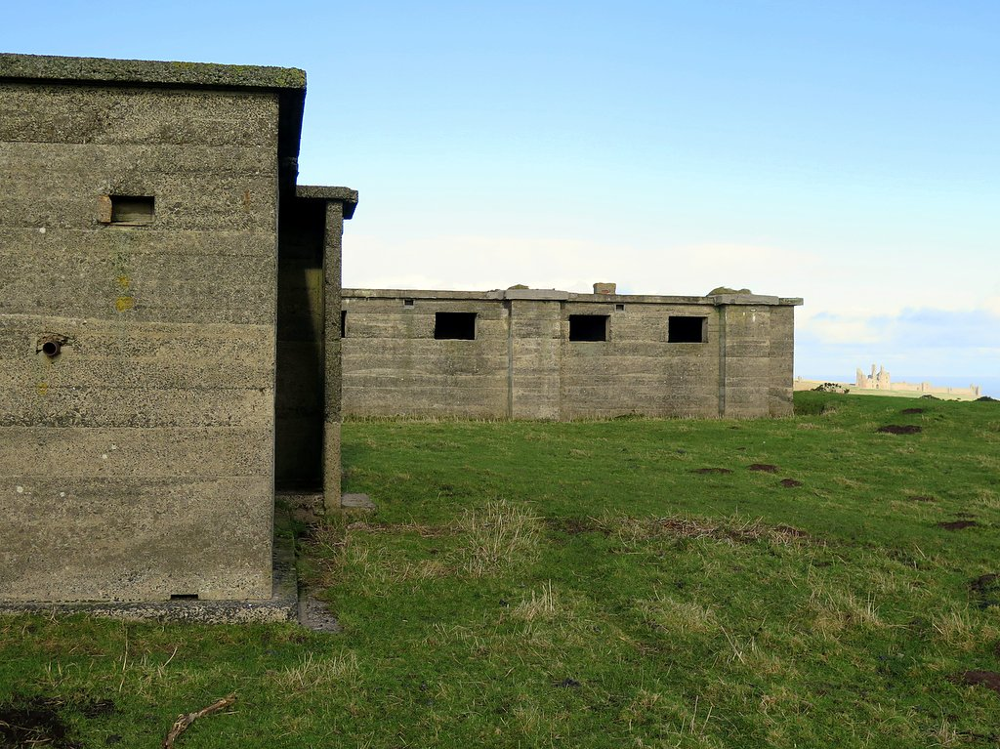

第 5 章
道丁系统
本特利修道院的地下室里，一个标图员接起了电话。时间是1940年8月13日凌晨四时五十分。电话线另一端是多佛尔的Chain Home雷达站。操作员的声音平稳，带着重复过几百次同一套话

术之后才会有的那种机械的清晰：“多佛尔CH站报告：敌机编队，方位105度，距离90英里，高度15000英尺，数量50以上，正在集结。”
标图员重复了一遍数据，放下电话，拿起推杆。推杆顶端装着一块黄色小木块——黄色代表未识别目标。她把木块推到地图上对应的坐标点。
地图覆盖了整张桌面，从英格兰南部海岸线一直延伸到法国北部。六盏灯从天花板上垂下来，把海岸线的轮廓照得发白。
几分钟后，第二个电话进来。拉伊站报告了同一批回波。然后是皮文西站，然后是文特诺站。
本土链的雷达站一个接一个捕捉到了从法国海岸升空的机群。黄色木块在地图上移动、分裂、重新聚合。标图员们的手指快速而准确，推杆在桌面上滑动，发出轻微的咔嗒声。
她们穿着皇家空军女子辅助部队的制服，袖子卷到手肘，头戴式耳机连接着数十条专用电话线。每一条线的另一端坐着一个雷达操作员、一个地面观察团的瞭望员，或者一个无线电监听站的军官。
房间另一侧，当值情报官站在略高的平台上俯瞰整张地图。他的工作不是操作雷达，不是驾驶战斗机，甚至不是直接下达作战命令。他盯着那些移动的彩色木块，判断哪些是真正的威胁，哪些是误报，哪些是佯动，然后把过滤后的情报传递给隔壁的作战室。这个流程在战争爆发前已经演练过几百次。每一次演习都暴露出新问题：电话线被演习部队意外切断，雷达站报告的目标数量与地面观察团目视结果对不上，标图员把友军训练飞行误标为敌机编队。每一次问题都被记录、分析、修正。到1940年夏天，这个系统已经不再是实验室里的原型。它是一台能够自我纠错的作战机器。
但演习是一回事。当黄色木块代表的不是模拟信号而是真实的德国轰炸机群时，地下室的空气就变了。凌晨五时过后，地图上的黄色木块开始急剧增多。加来方向、瑟堡方向、迪耶普方向——三个大规模编队同时在法国海岸上空集结。标图员们的声音此起彼伏，推杆移动的速度越来越快。过滤官俯身看着地图，嘴里低声重复着数字：方位、距离、高度、数量。他没有慌张。他的训练告诉他，慌张是信息处理中最致命的故障。
三十英里外的伦敦西北郊，皇家空军战斗机司令部作战室里，空军上将休·道丁站在同样的地图桌前。他六十一岁，头发灰白，面容消瘦。部下私下叫他“阴郁的休”。他很少笑，说话简洁到近乎刻薄。但那些和他共事超过十年的人知道，道丁不是阴郁——他是在计算。此刻他面前的地图显示着同样的画面：三个巨大的空袭编队正在法国海岸上空成形。根据雷达回波的规模和集结速度判断，这不是例行的侦察飞行或小规模骚扰。这是德国空军自法国战役结束以来对英国发动的最大规模空中攻势。德国人给这一天起的代号是“鹰日”。他们相信，彻底摧毁皇家空军只需要四天。
道丁手里有四个战斗机大队。部署在东南部的第11大队直面海峡最窄处；第12大队负责中部和东盎格利亚；第10大队守卫西南部；第13大队掩护北部和苏格兰。
四个大队加起来，大约六百架可以立即投入战斗的喷火式和飓风式战斗机。这个数字听起来不小，但道丁知道他不能把六百架飞机一次性全部撒出去。原因很简单：德国人有更多的飞机。德国空军第二航空队和第三航空队集结了超过两千架飞机——梅塞施密特109护航战斗机、梅塞施密特110双发重型战斗机、亨克尔111轰炸机、道尼尔17轰炸机、容克斯87俯冲轰炸机。
如果道丁把所有喷火式和飓风式同时升空拦截第一波攻击，那么当第二波、第三波接踵而至时，他的机场上就只剩下正在加油装弹的战斗机——趴在地面上，毫无防御能力。
所以他必须保留预备队。他必须判断哪一波攻击是主攻，哪一波是佯动。他必须在德国轰炸机到达目标之前做出决定——而留给他的决策窗口通常只有十五到二十分钟。
这个时间窗口来自本土链的雷达站。Chain Home的发射天线塔沿着英格兰南部和东部海岸线分布，从苏格兰的奥克尼群岛一直延伸到康沃尔。每座铁塔高达三百五十英尺，用钢梁铆接而成，在英吉利海峡的强风中微微晃动。发射机以25兆赫左右的频率向外辐射脉冲，波长大约12米。当脉冲碰到金属机身时，一部分能量被反射回来，接收天线捕捉到回波，操作员根据回波的时间延迟和方向计算出目标的距离和方位。
这套系统在1939年投入使用时，性能远谈不上完美。它的波长太长，角度分辨率很差——操作员只能大致判断目标在哪个方向，无法精确到度。它测不了高度，或者只能给出非常粗糙的估算。它分不清一架大型飞机和一个密集编队之间的区别。在低空，它的探测效果几乎为零，因为地面反射的杂波会把飞机回波淹没。在超过一百五十英里的距离上，信号衰减严重，小型编队经常漏报。
但它的探测距离足够远——理想条件下可以达到一百二十英里以上。这意味着当德国轰炸机群从法国加来海岸起飞时，多佛尔的雷达站几乎立刻就能看到它们。
德国机群需要爬升、编队、飞越海峡。以亨克尔111的巡航速度计算，从加来到伦敦大约需要三十到四十分钟。
雷达提供的最初预警占去其中的五到十分钟。剩下的二十多分钟里，信息必须完成一整个循环：雷达站操作员读取回波数据，通过专用电话线报告给本特利修道院的中央过滤室；过滤室的标图员将数据标注在地图上；过滤官剔除重复报告和明显误判；作战室里的道丁和他的参谋看到实时更新的态势图；道丁决定投入哪个大队的哪几个中队；命令通过电话线传达到大队指挥部；
大队指挥官分配具体的中队和拦截方向；中队指挥所拉响警报；飞行员跑向飞机；地勤人员启动发动机；战斗机滑出、起飞、爬升。
这个链条上的每一个环节都必须精确运转。任何一个环节的延迟都会吃掉道丁仅有的那十几分钟决策窗口。
而德国人不知道的是，英国人已经把这条链条反复打磨了三年。1937年，当本土链的第一批雷达站还在建设时，道丁就坚持要求空军部将雷达信息直接接入战斗机司令部的指挥系统。这个要求在当时遭到了相当大的阻力。高射炮部队认为雷达应该属于他们——毕竟探测飞机是防空火炮的职责。海军也有自己的雷达项目，对空军的扩张心存警惕。甚至空军内部也有反对声音：一些资深军官认为，与其把钱花在这些不可靠的电子设备上，不如多造几架战斗机。
道丁赢了这场官僚斗争。不是因为他的军衔更高——当时他只是空军委员会负责研发的成员之一——而是因为他提出了一个无法反驳的论点：如果雷达探测到敌机之后，信息还要经过层层传递才能到达战斗机指挥部，那么雷达的预警价值就丧失了一大半。探测速度和决策速度必须匹配。
他用了“匹配”这个词。这是一个工程术语，不是军事术语。但恰恰是这个工程思维定义了道丁系统与其他国家防空体系的关键区别。
在道丁的推动下，空军部成立了一个专门小组来设计信息流程：雷达站应该报告什么数据、用什么格式、通过什么渠道、到达谁的手里、由谁做出决策、如何反馈到执行单位。每一个环节都被拆解、标准化、反复演练。
电话线从每个雷达站直接铺设到本特利修道院——不是通过公共电话交换网，而是专用的军事线路，有冗余路由，有应急发电机。标图员的培训课程被设计出来：如何识别雷达报告的常见错误模式，如何区分真实的编队移动和大气扰动造成的假回波，如何在高压下保持每分钟处理二十条以上报告的准确率。
当1939年9月战争爆发时，这个系统已经运转了一年多。它在波兰战役期间进行了实战检验——虽然英国本土没有遭受空袭，但本土链多次探测到德国飞机在北海的活动。每一次探测都是一次数据积累：哪些回波特征对应轰炸机编队，哪些对应单架侦察机，哪些只是海鸟群或者气象杂波。操作员的经验在积累，过滤官的判断在精进，标图员的手速在提高。
到了1940年夏天，这个系统已经进化到可以在数分钟内完成从雷达接触到态势图的完整循环。
而德国人没有这个东西。这不是说德国没有雷达。恰恰相反，德国在1930年代末的雷达技术水平至少与英国持平，在某些方面甚至领先。1938年，德国海军通讯研究处开发的“弗雷亚”雷达已经投入使用，工作频率约125兆赫，波长2.4米——比Chain Home的12米短得多。更短的波长意味着更高的角度分辨率、更精确的测距能力、更好的低空探测性能。“弗雷亚”可以探测到80公里外的单架飞机，精度足以引导高射炮的火控雷达进行瞄准。从纯粹的硬件指标来看，“弗雷亚”是一台比Chain Home更先进的雷达。
1940年夏天，德国空军在法国海岸部署了若干台“弗雷亚”雷达站。它们的操作员同样能看到英国战斗机从英格兰南部机场起飞的回波。他们的屏幕上显示的信号比英国雷达站的阴极射线管上跳动的波形更清晰、更精确。
然而，这些硬件优势从未转化为战役层面的信息优势。因为信息优势不是由最好的单台设备决定的——而是由最慢的信息传递环节决定的。
但问题出在屏幕之后。“弗雷亚”雷达站在德国空军的指挥体系中属于高射炮部队的管辖范围——准确地说，属于空军通信兵下属的“无线电测量分队”。这些分队的职责是为高射炮提供目标指示，而不是为战斗机提供预警引导。
当“弗雷亚”操作员发现英国战斗机编队时，他们的报告首先送到高射炮指挥所；高射炮指挥所评估威胁等级后，再向上级报告；上级再酌情通报给战斗机部队。这个过程没有标准化的时间要求，没有统一的报告格式，没有专门的过滤中心来整合多个雷达站的信息。
更重要的是，德国空军的情报来源不止雷达一种。还有地面观察团——他们用光学测距仪和望远镜目视搜索天空；还有无线电监听站——他们截获英国飞行员的通话并试图从中提取情报；还有派到英国上空的高空侦察机——它们带回的照片需要冲洗、判读、绘制成目标清单。
这些情报来源各自有自己的汇报渠道、各自的优先级、各自的偏见和盲区。它们之间没有一个人或机构负责整合。
德国空军总司令赫尔曼·戈林在理论上拥有所有这些信息。但实际上，当一个英国战斗机中队从肯特郡的机场起飞时，“弗雷亚”雷达站看到了它，高射炮指挥所收到了报告，但战斗机部队可能要到二十分钟后才知道——那时英国战斗机已经爬升到拦截高度，正从太阳的方向俯冲下来。
这不是技术问题。这是组织问题。戈林的空军体制建立在一个前提上：德国空军的任务是进攻，不是防御。轰炸机部队是核心，战斗机部队是为轰炸机护航的辅助力量，高射炮部队是保卫机场和工厂的最后防线。在这个框架下，雷达天然地被分配给高射炮部队——因为高射炮需要精确的目标参数来调整引信和瞄准点。把雷达用于战斗机的远程预警引导，这在德国空军的条令里没有位置。
道丁在1937年做出的那个关键决定——把雷达信息直接接入战斗机指挥链——在德国的体制里根本不可能发生。不是因为德国人不知道怎么做，而是因为他们的组织逻辑不允许这样做。这种制度差异在1940年8月13日的“鹰日”被放大了。
这种制度差异在1940年8月13日的“鹰日”被放大了。凌晨五时半过后，本特利修道院的过滤室里，标图员们已经完成了对第一波来袭机群的态势标注。黄色木块变成了红色——确认为敌机。三个主要编队被清晰地标出：一个从加来方向朝多佛尔移动，一个从瑟堡方向指向波特兰，一个在迪耶普上空盘旋待命。过滤官判断第三个编队可能是预备队或佯动力量，他在报告上标注了这一点。
道丁在作战室里看着同样的画面。他做出了三个决定：第11大队的主力中队升空拦截多佛尔方向的编队；第10大队派出两个中队应对波特兰方向的威胁；第12大队保持地面待命——迪耶普方向的编队暂时不构成直接威胁，但如果它转向伦敦方向，第12大队将负责拦截。
命令在几分钟内通过电话线传达到各大队指挥部。第11大队指挥官基思·帕克空军少将——一个新西兰人，性格暴躁但战术嗅觉极其敏锐——立即下令比金山、霍恩彻奇、坦格米尔的战斗机中队紧急起飞。喷火式战斗机的梅林发动机在跑道上轰鸣，地勤人员最后检查了一遍弹药带和氧气系统，飞行员扣上面罩，松刹车，推油门。从第一份雷达报告到达过滤室到第一批战斗机升空，整个过程不到二十分钟。
海峡对岸。德国空军第二航空队的轰炸机群已经在法国海岸上空完成了编队。亨克尔111以紧密的箱形队形飞行，每架飞机装载着两千公斤炸弹。梅塞施密特109在编队上方和两侧护航，飞行员不断扫视着天空——他们的任务是在英国战斗机接近轰炸机之前拦截它们。但德国飞行员不知道英国战斗机会从哪个方向来、在多高的高度、以多大的数量。他们的“弗雷亚”雷达站确实探测到了英国战斗机的起飞——但这条信息此刻还在高射炮指挥所的通讯链里缓慢传递。等到它最终到达战斗机部队指挥官手中时，英国人的喷火式已经爬升到了一万五千英尺以上，占据了高度优势。
上午七时左右，第一场大规模空战在多佛尔上空爆发。第11大队的三个喷火式中队从太阳方向俯冲下来，穿过梅塞施密特109的护航幕，直接攻击轰炸机编队。亨克尔111的机背机枪手疯狂开火，但喷火式的速度太快了——它们以超过三百英里的时速穿过编队，八挺勃朗宁机枪同时喷出火焰。一架亨克尔111的左发动机被击中，黑烟拖出长长的尾迹，机身开始侧滑。另一架的座舱玻璃被打碎，飞行员趴在操纵杆上，飞机缓慢地翻转、下坠。
护航的梅塞施密特109试图拦截，但它们处于不利位置——高度太低，速度不够。德国飞行员拼命拉杆爬升，但喷火式已经完成攻击转向脱离。十几架梅塞施密特追了上去，在空中缠斗成一团。滚转、俯冲、爬升、开火——双方飞行员都在极限过载的边缘操纵着飞机。
这场空战持续了大约二十分钟。德国轰炸机编队被冲散，部分飞机被迫提前投弹后返航。英国方面损失了三架喷火式，两名飞行员跳伞获救。
从战术角度看，这是一次成功的拦截。但从系统角度看，更值得关注的是拦截发生之前的二十分钟——在那二十分钟里，雷达站捕捉到了回波，过滤室处理了信息，道丁做出了决策，战斗机准时出现在正确的位置。德国飞行员在战后接受审讯时反复提到同一个困惑：无论他们从哪个方向接近英国海岸，英国战斗机似乎总是在等着他们。有人猜测英国人在法国安插了间谍网络，有人认为是无线电监听暴露了编队计划，还有人怀疑英国发明了某种能够看穿云层的秘密光学设备。很少有人想到那些在海边微微晃动的钢铁塔架。也很少有人想到本特利修道院地下室里那些拿着推杆的女人。
八月十三日的战斗持续了一整天。德国空军发动了多波次攻击——上午轰炸了多佛尔和波特兰的港口设施，下午袭击了南安普顿的飞机制造厂和泰晤士河口的船坞。每一波攻击都被本土链提前发现。每一次拦截都在德国机群到达目标之前展开。
但道丁系统并非无懈可击。下午三时左右，一个德国俯冲轰炸机编队从低空接近怀特岛附近的雷达站。Chain Home的低空探测盲区让容克斯87在雷达屏幕上消失了将近十分钟。当它们重新出现时——被地面观察团目视发现——距离目标只剩下不到五分钟的航程。第10大队紧急起飞拦截，但已经来不及阻止投弹。文特诺雷达站被直接命中，发射天线倒塌，操作员伤亡三人。
这是道丁系统最脆弱的环节：低空覆盖依赖地面观察团的人眼和望远镜，而观察团在阴雨天气或夜间几乎无法工作。本土链的设计从一开始就优先考虑高空远程探测——因为轰炸机在高空飞行时航程最远、载弹量最大——但这个选择意味着低空成为防御体系的盲区。
德国人注意到了这一点。在随后的几周里，他们越来越多地使用低空突袭战术——特别是针对沿海的雷达站和机场。容克斯87利用地形掩护接近目标，在最后一刻拉起投弹，然后急速转向脱离。道丁的反应是调整部署。他把一些飓风式战斗机中队转移到更靠近海岸的前进机场，缩短低空拦截的反应时间。他要求地面观察团增加海岸线的瞭望哨密度。他推动空军部加速部署一种新型的低空补盲雷达——这种设备后来被称为Chain Home Low，工作频率更高，天线更小，专门用来填补低空盲区。但这些措施需要时间。而在1940年8月的最后两周里，时间是最稀缺的资源。
德国空军的攻击强度每天都在增加。8月15日——后来被称为“黑色星期四”——德国人发动了最大规模的攻势，出动飞机超过两千架次，同时攻击东北部和南部目标。第13大队在纽卡斯尔上空拦截了从挪威方向飞来的亨克尔111编队——这是本土链最北端的雷达站第一次参与大规模拦截作战。同一天下午，第11大队在肯特郡上空与超过一百架梅塞施密特109和110展开混战。
本特利修道院的地下室里，标图员们连续工作了十几个小时。地图上的红色木块从未减少过——一波尚未退去，下一波已经出现在屏幕边缘。电话线那头的雷达操作员声音沙哑地报出数字：方位、距离、高度、数量。过滤官的眼睛布满血丝，但他的判断仍然准确：这一波是主攻，这一波是佯动，这一波需要立即拦截。
道丁站在作战室里，几乎没有坐下过。他的参谋注意到他在不断计算——不是用纸笔，而是在心里默算：第11大队还有多少架可用的战斗机？飞行员的状态如何？哪些机场还能起降？如果下一波攻击指向比金山——第11大队最重要的扇形指挥站——他应该从哪里抽调预备队？
他保留预备队的决心从未动摇过。即使在最危急的时刻——当多佛尔和霍恩彻奇同时遭到攻击、帕克请求增援时——道丁仍然扣着第12大队的几个中队没有撒出去。他知道德国人可能还有未投入的预备队。他知道一天的战斗不是决定性的。他知道皇家空军的真正弱点不是飞机数量——不列颠空战期间英国的战斗机产量一直高于损失量——而是飞行员。训练一个合格的战斗机飞行员需要几个月，而一场高强度空战可以在几分钟内消耗掉一个中队的飞行骨干。
所以他必须确保每一次拦截都是必要的。每一架升空的战斗机都必须有明确的战术目标。每一次交战都必须在地面信息支持下占据有利位置。这就是道丁系统的核心逻辑：信息效率转化为兵力效率。
德国的体制无法做到这一点。“弗雷亚”雷达看到的目标比Chain Home更清晰——波长2.4米的脉冲比12米的脉冲能分辨出更精细的结构，“弗雷亚”甚至可以大致判断出编队的机型组成。
但这些更精确的信息没有被更快地传递到决策者手中。它们在高射炮指挥所里被评估、归档、汇总——等到最终形成情报简报时，英国战斗机可能已经完成了拦截并返航加油了。戈林意识到了这个问题——但只意识到了一部分。1940年8月下旬，他下令将部分“弗雷亚”雷达站划归战斗机部队直接使用，试图模仿英国人的模式。
但这个命令执行得非常缓慢：高射炮部队不愿交出设备控制权；战斗机部队不知道如何使用雷达信息；前线指挥官已经习惯了依靠目视观察和无线电报告的传统方式。到9月中旬不列颠空战进入决定性阶段时，德国的雷达信息整合仍然处于混乱状态。
更致命的是另一个差距：德国人没有中央过滤室。他们有多部“弗雷亚”雷达分布在法国海岸的不同位置，每部雷达都能探测到英国战斗机的活动。但这些雷达站的报告各自独立地向上传递——没有一个中心机构负责整合多个雷达站的数据、剔除重复回波、绘制统一的态势图。这意味着当一个英国战斗机中队从肯特郡飞向海峡时，“弗雷亚”A站看到了它，“弗雷亚”B站也看到了它——但它们可能把它报告为两个不同的编队。情报到达战斗机指挥官手中时，他看到的不是一幅清晰的态势图，而是一堆相互矛盾的数字。
这个缺陷在9月15日——“不列颠之战日”——被彻底暴露出来。那天上午十一时左右，本土链的多个雷达站同时探测到两个超大规模的空袭编队正在法国海岸集结。根据回波强度判断，每个编队都超过一百架飞机——这是不列颠空战开始以来最大的单次攻击规模。中央过滤室在数分钟内完成了情报整合：两个编队分别从加来和迪耶普方向接近，间隔大约十五分钟航程。
道丁看着态势图，做出了当天最关键的一个决定：第11大队的全部可用中队升空拦截第一波；第12大队的五个中队紧急起飞支援；第10大队和13大队各自派出两个中队作为机动预备队。这意味着他把几乎所有能飞的战斗机都投入了战斗——但他仍然保留了最后四个中队在地面待命。他的判断是：如果德国人还有第三波攻击——如果前两波只是消耗皇家空军战斗机的诱饵——那么这四个中队将是伦敦上空最后的防线。
上午十一时半过后，第一波空战在肯特郡上空打响。超过三百架飞机在从多佛尔到伦敦的狭长空域里绞杀成一团。喷火式对付护航的梅塞施密特109，飓风式攻击轰炸机编队。德国轰炸机的紧密箱形队形在英国战斗机的反复冲击下逐渐松散——一架亨克尔111脱离编队试图独自突围，立刻被三架飓风式咬住；
一组道尼尔17降低高度试图借助云层掩护逃脱，却被地面观察团持续跟踪并将位置通报给追击的战斗机。本特利修道院的地下室里，标图员们的推杆移动速度快得几乎看不清手指的动作。红色木块在地图上不断分裂、合并、消失——每一块消失的红色木块代表一架被击落或正在坠落的德国飞机。但新的红色木块不断出现：第二波编队已经飞越了海岸线。
下午一时左右，第二波空袭抵达伦敦东南郊上空。德国轰炸机的目标是泰晤士河沿岸的码头和工厂区。但它们的护航战斗机在第一波交战中已经消耗了大量燃油和弹药——梅塞施密特109的航程一直是制约德国空军的致命短板。从法国加来到伦敦的距离大约是150英里，109以经济巡航速度飞行的最大航程只有400英里左右。
这意味着它只能在伦敦上空停留大约十到十五分钟进行空战——然后就必须返航，否则将在海峡上空耗尽燃油。当第二波轰炸机群接近伦敦时，许多护航的109已经开始脱离编队返航。剩下的护航战斗机数量不足以覆盖整个轰炸机编队的侧翼和尾部。第12大队的五个中队——刚刚从英格兰中部机场赶到的增援力量——抓住了这个窗口。它们从北面俯冲下来，杜克斯福德联队的喷火式以密集的V形队形冲向德国轰炸机群的左翼。
这是一场单方面的屠杀。缺乏足够护航的亨克尔111和道尼尔17在喷火式的八挺机枪面前毫无还手之力。一架接一架轰炸机起火坠落——有些在郊区田野里撞出巨大的弹坑，有些直接坠入泰晤士河的泥滩中。德国机组人员跳伞后被英国地方防卫志愿队俘虏——这些志愿队员大多是第一次世界大战的老兵，拿着猎枪和干草叉看守着战俘直到正规军到达。
到下午三时左右，第二波攻击被彻底击溃。道丁仍然没有动用最后四个预备中队。他的判断是对的：德国人确实准备了第三波攻击——一个由容克斯88快速轰炸机组成的小规模编队试图趁乱突袭伦敦西部的飞机制造厂。
但当它们飞越海岸线时，本土链的雷达站立刻捕捉到了回波。中央过滤室确认了目标性质——小型快速编队、低空接近、目标很可能是机场或工厂。道丁下令最后四个预备中队升空。容克斯88编队在到达目标之前就被拦截了。四架被击落，其余丢弃炸弹后高速脱离。
9月15日的战斗以德国空军的惨败告终。德国方面的记录显示当天损失了六十架飞机——这是不列颠空战开始以来单日损失的最高数字。英国方面损失了二十六架战斗机，但大部分飞行员跳伞获救并在当天重新投入战斗。两天后，希特勒下令无限期推迟入侵英国的海狮计划。不列颠空战的决定性阶段结束了。
但真正值得分析的从来不是伤亡数字本身。值得分析的是信息流的方向和速度。当一架德国梅塞施密特109在肯特郡上空耗尽燃油时，它的飞行员可能至死都不知道为什么英国战斗机总是出现在正确的位置。他看到的只是结果：他从法国起飞时拥有高度优势和数量优势；他飞越海峡时一切正常；
但当他接近英国海岸时——英国战斗机已经在那里了。不是一两个中队在巡逻中偶然撞见他们，而是整个拦截体系精确地运作着：雷达发现、情报过滤、指挥决策、战斗机引导——每一步都踩在德国人的时间线上。
而反过来看：当一架英国喷火式飞行员在多佛尔上空追逐亨克尔111时，他的耳机里不断传来地面管制员的声音——“目标方位090度，距离两英里，高度正在下降”——这些指令来自扇形指挥站的管制员；管制员的信息来自大队指挥部的态势图；态势图的数据来自本特利修道院的中央过滤室；过滤室的推杆移动来自沿海二十多个雷达站的实时报告。
这条信息链上的每一个人都只做一件事：接收数据、处理数据、传递数据。没有人需要理解整个系统的全貌。没有人需要知道为什么道丁保留预备队或者为什么帕克选择在这个高度拦截而不是那个高度。他们只需要把自己的工作做到最精确、最快速——然后信任链上的下一环会同样精确地接住。
这就是道丁系统的真正含义。它不是一套设备清单——不是Chain Home加上过滤室加上电话线加上作战室——而是一种组织原则：将技术探测能力转化为指挥决策速度的制度设计。德国的“弗雷亚”雷达在物理性能上优于Chain Home：波长更短、精度更高、天线更紧凑、部署更灵活。
“维尔茨堡”火控雷达也是当时世界上最精确的炮瞄雷达——工作频率560兆赫、波长53厘米、可以精确跟踪单架飞机的三维坐标并引导高射炮射击。
但这些硬件优势从未转化为战役层面的信息优势。因为信息优势不是由最好的单台设备决定的——而是由最慢的信息传递环节决定的。在德国的体制里，“弗雷亚”的报告要经过至少三道中转才能到达战斗机指挥官手中；
“维尔茨堡”的数据被高射炮部队独占使用；不同军种之间的情报共享受到官僚壁垒的限制；戈林本人经常越过指挥链直接向前线部队下达命令——这些命令有时与实际情况完全脱节。英国用更粗糙的硬件实现了更高的信息效率。这不是技术的胜利。这是制度设计的胜利。
1940年秋天的一个傍晚——不列颠空战的高峰期已经过去——一架被击落的德国亨克尔111轰炸机的残骸躺在肯特郡的一片麦田里。机身断成三截，机翼碎片散落在几十米范围内。
皇家空军的调查小组在残骸中发现了一台完好无损的无线电导航接收机——这是德国空军用来引导轰炸机在夜间或恶劣天气下找到目标的洛伦兹波束系统的一部分。这台设备被小心翼翼地拆卸下来，送往法恩伯勒的皇家航空研究院进行分析。
工程师们发现它的设计精巧、制造精良——德国人在无线电技术上的工业能力丝毫不在英国人之下。几英里外，一座Chain Home雷达站的铁塔在秋风中微微晃动。它的发射机用的是可拆卸的真空管，每隔几周就要更换一次；它的天线阵列是用普通钢材焊接而成，已经开始生锈；它的操作员手册是用打字机打出来的，页边写满了手写的修正和备注；它的电话线有一段被之前的空袭炸断过，工兵用临时接头修复后继续使用。
但它仍然在工作。天线旋转着，脉冲以每秒二十五次的频率向外辐射，覆盖着英吉利海峡上方的每一寸空域。回波信号沿着电话线流入本特利修道院的地下室，标图员的手指将信号转化为地图上的彩色木块，过滤官的眼睛判断着威胁的真伪，道丁或者帕克做出决策，战斗机升空拦截。
这个回路已经运转了整整一个夏天，并且仍在继续运转。在那片散落着德国精密设备的麦田里，在那座生锈的铁塔脚下，1940年的秋天已经把答案写得很清楚了。